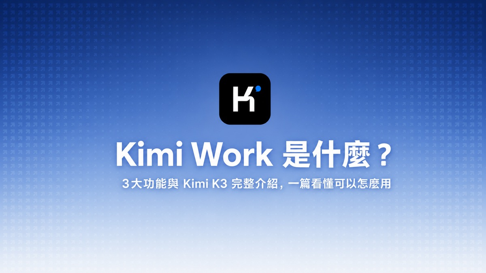

Threads｜AI郵報：Kimi Work 從聊天視窗走向 AI Workspace 的三個關鍵能力
7---23----------02_50_44.png"
alt: "藍色漸層背景與 Kimi 圖示，主標 Kimi Work 是什麼？副標 3 大功能與 Kimi K3 完整介紹，一篇看懂可以怎麼用"
role: cover
importance: high
---
Threads｜AI郵報：Kimi Work 從聊天視窗走向 AI Workspace 的三個關鍵能力
來源是 AI郵報（@aiposthub）在 Threads 發布的 Kimi Work 串文。貼文主張：Kimi K3 發布後，真正值得注意的不只是模型本身，而是 Kimi Work 展示了 AI 工具從「聊天視窗」逐漸變成能持續完成專案的工作空間。

公開 Threads 內容
Threads 可見 canonical URL 為 `https://www.threads.com/@aiposthub/post/DbIkxNGAe1S`，頁面擷取時主串顯示約 2,164 次瀏覽。首則貼文摘要為：
> Kimi K3 發布後，真正值得注意的產品，其實是 Kimi Work。它展示的，是 AI 工具正在從「聊天視窗」，逐漸變成一套能持續完成專案的工作空間。目前最值得關注的有 3 個功能。
作者後續串文列出三項功能：
- Workspace：可指定本機資料夾，讓 Kimi Work 讀取 PDF、整理資料、產生報告，並把 PPT、Excel 或 Word 成果存回原位置，讓研究過程、參考文件與輸出成果圍繞同一個 Project 運作。
- Goal Mode：使用者設定最終成果、完成標準與限制條件後，AI 持續檢查進度、調整策略，直到任務完成或遇到需要使用者介入的問題；適合大量 PDF、產業研究、知識庫、主管簡報等需要反覆嘗試的工作。
- Agent Swarm：把大型任務拆給多個 AI Agent 同時處理，再由主 Agent 整合；例如分析 100 個 YouTube 頻道，適合競品分析、市場研究、大量文件整理與批次資料蒐集。
貼文最後補充：目前免費版本仍可能遇到系統繁忙、功能無法完整執行等問題，實際穩定度仍需觀察。
圖片 / 封面描述
保存的主圖是 AI郵報原文封面：藍色漸層背景上方有黑底 Kimi 圖示，中間大字為「Kimi Work 是什麼？」；副標為「3 大功能與 Kimi K3 完整介紹，一篇看懂可以怎麼用」。這張圖明確對應 Kimi Work 主題，可作為歸檔文章封面。
官方來源與查核
Kimi 官方資源頁《Kimi Work: The Local AI Agent for Your Desktop》確認，Kimi Work 是 macOS / Windows 桌面 AI agent，面向知識工作，能讀取本機檔案、操作瀏覽器、執行程式與排程任務，並把工作成果輸出成報告、簡報、試算表、Word、網站等多種格式。這支持 AI郵報對「從聊天視窗走向工作空間」的核心判讀。
官方頁也明確列出 Goal Mode：使用者指定 objective、acceptance criteria 與 constraints 後，Kimi Work 會持續執行、蒐集資訊、修改程式或產出報告，並在每輪結束時判斷目標完成、受阻、暫停或繼續。這支持 Threads 對「持續追蹤任務目標」的描述。
Agent Swarm 方面，Kimi 官方介紹稱 Kimi Work 可從單一指令啟動最高 300 個 agents，將大型任務拆成並行子任務後整合成單一成果；Kimi help / Agent Swarm 頁也將其定位為平行多代理工作。這支持 Threads 對「大型任務拆給多個 AI」的概括。
Workspace / 本機資料夾方面，官方使用教學說明 Kimi Work 可建立 project 並連結資料夾，之後從資料夾讀取、寫入與保存檔案；也可設定權限，例如 ask permission 或 full access。這支持 Threads 對「AI 進入專案資料夾」的描述，但也提醒導入時要管理權限與資料邊界。
實務判讀
這則串文值得歸檔，因為 Kimi Work 代表一個明顯產品方向：AI 服務不再只競爭單次回答品質，而是競爭誰能掌握檔案、工具、瀏覽器、排程、代理協作與長時間任務狀態。
對個人知識工作者而言，Kimi Work 的價值不在於「又多一個聊天機器人」，而在於把研究、資料夾、簡報、表格、網頁操作與任務回合放在同一個可觀察的 workspace 裡。這與 ChatGPT Projects、Claude Projects、Google Workspace / Gemini、以及各類 agent runtime 的方向一致：讓 AI 更接近「把事情做完」而不是「告訴你怎麼做」。
對團隊導入而言，真正要評估的是：
- 哪些資料夾可以讓 agent 讀寫，哪些不能；
- Full Access 與逐次詢問權限如何分流；
- 長任務 / Goal Mode 是否有清楚完成標準、預算限制與人工介入點；
- 多代理平行蒐集資料時如何避免重複、錯誤引用與來源幻覺；
- 產出簡報、表格、報告後是否有人工審核與版本控制。
補充邊界
- AI郵報 Threads 與原文屬二手整理；正式功能、免費額度、排程數量、代理數量、地區與方案限制需以 Kimi 官方頁與實際帳號介面為準。
- 「可讀寫本機資料夾」不等於所有資料都適合交給 agent；含個資、商業機密、受 NDA 約束資料仍需先建立資料分級與測試沙盒。
- Agent Swarm 適合大量可拆分任務；若任務需要高精度判讀、法律/醫療/財務責任或嚴格引用，仍需加入 retrieval、來源驗證與人工審核。
- 貼文提到免費版本可能系統繁忙，這是作者測試時觀察；穩定度與開放程度可能隨服務容量與版本變化。